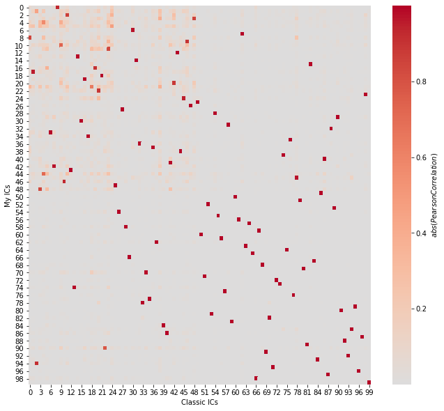

Using a custom clustering class#
Load modules#
[1]:
from robustica import RobustICA, corrmats
import pandas as pd
import numpy as np
from sklearn.cluster import AgglomerativeClustering
from sklearn.utils import parallel_backend
import matplotlib.pyplot as plt
import seaborn as sns
Load data from Sastry (2019)#
[2]:
url = "https://static-content.springer.com/esm/art%3A10.1038%2Fs41467-019-13483-w/MediaObjects/41467_2019_13483_MOESM4_ESM.xlsx"
data = pd.ExcelFile(url)
data.sheet_names
[2]:
['README',
'Metadata',
'Expression Data',
'S matrix',
'A matrix',
'Media Recipes',
'Gene Information']
[3]:
data.parse("README")
[3]:
| Sheet Name | Description | |
|---|---|---|
| 0 | Experimental Conditions | Experimental conditions for each sample in PRE... |
| 1 | Expression Data | Expression levels of genes (log2 Transcripts p... |
| 2 | S matrix | I-modulon gene coefficients. Each column is an... |
| 3 | A matrix | Condition-specific i-modulon activities. Each ... |
| 4 | Media Description | Recipes for base media and trace element mixtures |
| 5 | Gene Information | Mapping of b-numbers to gene names/annotations... |
| 6 | NaN | NaN |
| 7 | Metadata Columns | Description |
| 8 | Sample ID | Unique sample identifier for experiment (e.g. ... |
| 9 | Study | Short 1-2 word description of study where samp... |
| 10 | Project ID | Identifier for study |
| 11 | Condition ID | Identifier for unique experimental conditions |
| 12 | Replicate # | Suffix for sample ID to distinguish between re... |
| 13 | Strain Description | Describes gene knock-out, mutation knock-in, o... |
| 14 | Strain | MG1655 or BW25113 |
| 15 | Base Media | Media recipe as described in Media Description... |
| 16 | Carbon Source (g/L) | Carbon source in g/L |
| 17 | Nitrogen Source (g/L) | Nitrogen source in g/L |
| 18 | Electron Acceptor | Aerobic (O2), anaerobic (None), or nitrate (KN... |
| 19 | Trace Element Mixture | Trace element recipe as described in Media Des... |
| 20 | Supplement | Additional media supplements in each experimen... |
| 21 | Temperature (C) | Temperature of growth condition in Celsius |
| 22 | pH | Neutral (7) or acidic (5.5) |
| 23 | Antibiotic | Treatment with low concentration Kanamycin for... |
| 24 | Culture Type | Batch or Chemostat (always exponential growth ... |
| 25 | Growth Rate (1/hr) | Measured growth rate of strain in media |
| 26 | Evolved Sample | Whether the strain was from an adaptive labora... |
| 27 | Isolate Type | Clonal or Population (only applicable to ALE s... |
| 28 | Sequencing Machine | Type of machine used for sequencing |
| 29 | Additional Details | Additional information about experiment |
| 30 | Biological Replicates | Number of biological replicates within study |
| 31 | Alignment | Percent of reads aligned by bowtie to referenc... |
| 32 | DOI | Accession number for study |
| 33 | GEO | GEO Accession ID |
Preprocess data#
Following the article’s methods, we compute the log2FCs with respect to controls
[4]:
# get gene expression
X = data.parse("Expression Data").set_index("log-TPM")
# get controls
controls = [c for c in X.columns if "control" in c]
print(controls)
# compute log2FCs with respect to controls
X = X - X[controls].mean(1).values.reshape(-1, 1)
X
['control__wt_glc__1', 'control__wt_glc__2']
[4]:
| control__wt_glc__1 | control__wt_glc__2 | fur__wt_dpd__1 | fur__wt_dpd__2 | fur__wt_fe__1 | fur__wt_fe__2 | fur__delfur_dpd__1 | fur__delfur_dpd__2 | fur__delfur_fe2__1 | fur__delfur_fe2__2 | ... | efeU__menFentC_ale29__1 | efeU__menFentC_ale29__2 | efeU__menFentC_ale30__1 | efeU__menFentC_ale30__2 | efeU__menFentCubiC_ale36__1 | efeU__menFentCubiC_ale36__2 | efeU__menFentCubiC_ale37__1 | efeU__menFentCubiC_ale37__2 | efeU__menFentCubiC_ale38__1 | efeU__menFentCubiC_ale38__2 | |
|---|---|---|---|---|---|---|---|---|---|---|---|---|---|---|---|---|---|---|---|---|---|
| log-TPM | |||||||||||||||||||||
| b0002 | -0.061772 | 0.061772 | 0.636527 | 0.819793 | -0.003615 | -0.289353 | -1.092023 | -0.777289 | 0.161343 | 0.145641 | ... | -0.797097 | -0.791859 | 0.080114 | 0.102154 | 0.608180 | 0.657673 | 0.813105 | 0.854813 | 0.427986 | 0.484338 |
| b0003 | -0.053742 | 0.053742 | 0.954439 | 1.334385 | 0.307588 | 0.128414 | -0.872563 | -0.277893 | 0.428542 | 0.391761 | ... | -0.309105 | -0.352535 | -0.155074 | -0.077145 | 0.447030 | 0.439881 | 0.554528 | 0.569030 | 0.154905 | 0.294799 |
| b0004 | -0.065095 | 0.065095 | -0.202697 | 0.119195 | -0.264995 | -0.546017 | -1.918349 | -1.577736 | -0.474815 | -0.495312 | ... | -0.184898 | -0.225615 | 0.019575 | 0.063986 | 0.483343 | 0.452754 | 0.524828 | 0.581878 | 0.293239 | 0.341040 |
| b0005 | 0.028802 | -0.028802 | -0.865171 | -0.951179 | 0.428769 | 0.123564 | -1.660351 | -1.531147 | 0.240353 | -0.151132 | ... | -0.308221 | -0.581714 | 0.018820 | 0.004040 | -1.228763 | -1.451750 | -0.839203 | -0.529349 | -0.413336 | -0.478682 |
| b0006 | 0.009087 | -0.009087 | -0.131039 | -0.124079 | -0.144870 | -0.090152 | -0.219917 | -0.046648 | -0.044537 | -0.089204 | ... | 1.464603 | 1.415706 | 1.230831 | 1.165153 | 0.447447 | 0.458852 | 0.421417 | 0.408077 | 1.151066 | 1.198529 |
| ... | ... | ... | ... | ... | ... | ... | ... | ... | ... | ... | ... | ... | ... | ... | ... | ... | ... | ... | ... | ... | ... |
| b4688 | -0.261325 | 0.261325 | -1.425581 | -2.734490 | 0.181893 | 0.514395 | -1.943947 | -1.992701 | 0.066037 | -0.695325 | ... | -0.885297 | -0.462485 | -2.734490 | -1.451148 | -1.379069 | -1.567420 | -0.999610 | -1.726577 | -2.734490 | -1.189069 |
| b4693 | -0.278909 | 0.278909 | 1.361362 | 1.020310 | 0.608108 | 0.988541 | 2.558416 | 2.142724 | 3.120867 | 3.104887 | ... | -0.374963 | 0.856574 | -1.147824 | -0.814089 | 2.054471 | 1.853620 | 1.957717 | 1.943582 | 2.233115 | 2.023755 |
| b4696_1 | 0.050526 | -0.050526 | 1.166436 | 1.043373 | -0.531441 | -0.581626 | 0.914055 | 0.731165 | -0.127269 | -0.164046 | ... | 0.261604 | 0.278426 | 0.201089 | -0.017780 | 0.138178 | 0.122287 | 0.504402 | 0.425213 | 0.629383 | 0.805945 |
| b4696_2 | -0.031653 | 0.031653 | 0.785573 | 0.881353 | -0.477271 | -0.916095 | 0.837603 | 0.801393 | -0.071710 | -0.000540 | ... | -0.499371 | 0.398783 | 0.096609 | -0.103446 | -0.519098 | 0.615363 | 0.343959 | 0.580288 | 0.366905 | 0.702608 |
| b4705 | 0.724324 | -0.724324 | -4.350151 | -4.317498 | -0.747489 | -1.257045 | -3.308337 | -4.421970 | -2.679693 | -1.872713 | ... | -1.968530 | -1.365300 | -5.468290 | -2.997169 | -3.673367 | -3.161608 | -3.959910 | -4.088644 | -5.468290 | -5.468290 |
3923 rows × 278 columns
Run robustica with custom clustering classes#
Using the classical Icasso algorithm#
[5]:
%%time
rica = RobustICA(
n_components=100,
robust_runs=8,
robust_infer_signs=False,
robust_dimreduce=False,
robust_kws={"affinity": "precomputed", "linkage": "average"},
)
with parallel_backend("loky", n_jobs=4):
S_classic, A_classic = rica.fit_transform(X.values)
print(S_classic.shape, A_classic.shape)
0%| | 0/8 [00:00<?, ?it/s]
Running FastICA multiple times...
100%|██████████| 8/8 [00:03<00:00, 2.03it/s]
Precomputing distance matrix...
Clustering...
Computing centroids...
(3923, 100) (278, 100)
CPU times: user 2.42 s, sys: 242 ms, total: 2.67 s
Wall time: 8.59 s
Using your clustering algorithm#
Create your own clustering class#
In this example, we create a clustering class that computes the distance within the class.
[6]:
class MyClusteringClass:
def __init__(self, **kws):
self.clustering = AgglomerativeClustering(
affinity="precomputed", linkage="average", **kws
)
def fit(self, X):
# compute dissimilarity matrix
D = 1 - np.abs(np.corrcoef(X))
# cluster
self.clustering.fit(D)
self.labels_ = self.clustering.labels_ # required instance
Run#
You just need to define your class in the robust_method and its keyword arguments in robust_kws. In this example,
[7]:
%%time
rica = RobustICA(
n_components=100,
robust_runs=8,
robust_infer_signs=False,
robust_dimreduce=False,
robust_method=MyClusteringClass,
robust_kws={"n_clusters": 100}, # define expected n. clusters
robust_precompdist_func=None,
)
with parallel_backend("loky", n_jobs=4):
S, A = rica.fit_transform(X.values)
print(S.shape, A.shape)
0%| | 0/8 [00:00<?, ?it/s]
Running FastICA multiple times...
100%|██████████| 8/8 [00:03<00:00, 2.47it/s]
/home/miquel/miniconda3/lib/python3.8/site-packages/numpy/lib/arraysetops.py:580: FutureWarning: elementwise comparison failed; returning scalar instead, but in the future will perform elementwise comparison
mask |= (ar1 == a)
Clustering...
Computing centroids...
(3923, 100) (278, 100)
CPU times: user 2.52 s, sys: 64.5 ms, total: 2.58 s
Wall time: 8.13 s
Correspondence between the two approaches#
[8]:
plt.figure(figsize=(11, 10))
sns.heatmap(
np.abs(corrmats(S.T, S_classic.T)),
cmap="coolwarm",
center=0,
cbar_kws={"label": r"$abs(Pearson Correlation)$"},
)
plt.xlabel("Classic ICs")
plt.ylabel("My ICs")
plt.show()

Using other existing clustering algorithms#
robustica accepts any clustering class as robust_method. It just needs to create a self.labels_ attribute. For example, we can use `HDBSCAN <https://hdbscan.readthedocs.io/en/latest/how_hdbscan_works.html>`__.
[9]:
from hdbscan import HDBSCAN
[10]:
rica = RobustICA(
n_components=100,
robust_runs=8,
robust_method=HDBSCAN,
robust_kws={"min_cluster_size": 4}, # half of robust_runs
)
with parallel_backend("loky", n_jobs=4):
S, A = rica.fit_transform(X.values)
print(S.shape, A.shape)
0%| | 0/8 [00:00<?, ?it/s]
Running FastICA multiple times...
100%|██████████| 8/8 [00:02<00:00, 2.80it/s]
Inferring sign of components...
Reducing dimensions...
Clustering...
/home/miquel/miniconda3/lib/python3.8/site-packages/numpy/lib/arraysetops.py:580: FutureWarning: elementwise comparison failed; returning scalar instead, but in the future will perform elementwise comparison
mask |= (ar1 == a)
Computing centroids...
(3923, 93) (278, 93)
[11]:
rica.clustering.stats_
[11]:
| cluster_id | cluster_size | S_mean_std | A_mean_std | |
|---|---|---|---|---|
| 0 | -1.0 | 63.0 | 0.015966 | 4.107105 |
| 1 | 0.0 | 8.0 | 0.015966 | 5.892067 |
| 2 | 1.0 | 8.0 | 0.015966 | 13.805991 |
| 3 | 2.0 | 8.0 | 0.015966 | 9.572825 |
| 4 | 3.0 | 8.0 | 0.015966 | 9.232571 |
| ... | ... | ... | ... | ... |
| 88 | 87.0 | 8.0 | 0.015966 | 4.127089 |
| 89 | 88.0 | 8.0 | 0.015966 | 3.455316 |
| 90 | 89.0 | 4.0 | 0.015966 | 6.677909 |
| 91 | 90.0 | 8.0 | 0.015966 | 3.843471 |
| 92 | 91.0 | 7.0 | 0.015966 | 3.586185 |
93 rows × 4 columns